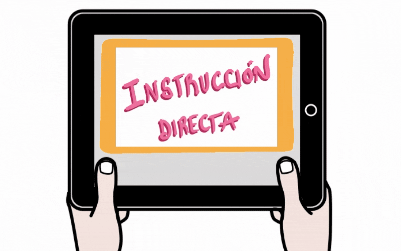
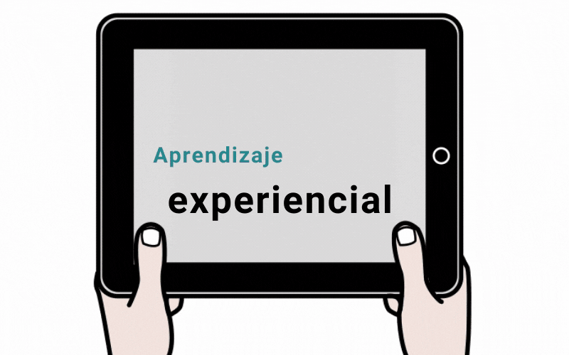
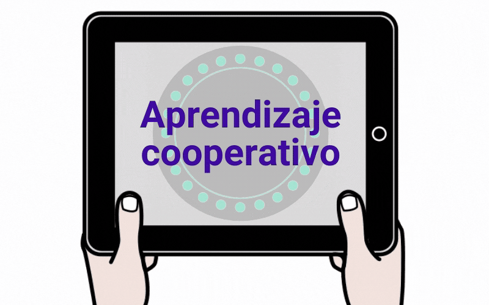
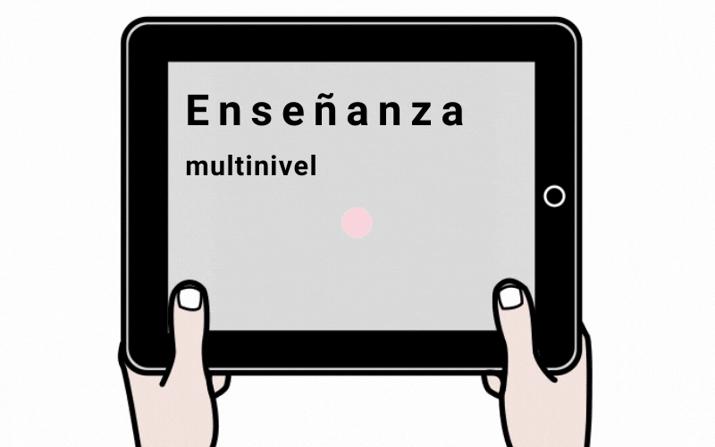

Instrucción Directa

Modelo basado en la enseñanza estructurada, en la que se establece claramente el objetivo a conseguir, se secuencia y se ofrece poco a poco, según el grado de desempeño del alumnado.
El profesorado sirve de guía porque proporciona información sobre nuevos conceptos y procedimientos y ofrece retroalimentación a las respuestas, reenseñando o redirigiendo.
Basado en diseñar secuencias didácticas sistemáticas en las que se combina exposición y práctica, en las que las ayudas se van retirando gradualmente.
Basado en la participación del alumnado (en grupo e individual). No confundir la instrucción directa con las clases expositivas en las que el alumnado solo recibe información.
Muy útil para las áreas instrumentales y para atender a la diversidad, ya que reduce la carga cognitiva y permite partir de lo que sabe el alumnado, adaptándose a los diferentes ritmos.
Aprendizaje experiencial

Bajo el paraguas del aprendizaje experiencial se aglutinan una serie de métodos que ponen el acento en la resolución de problemas de manera colaborativa a través de la indagación, la discusión y la comunicación.
Así, las primeras propuestas de Dewey y Bruner se basaban en ofrecer recursos al alumnado para buscar información y explorar y descubrir ideas, contando con ayuda variable en función de la naturaleza de la tarea a desarrollar. Estas propuestas confluyen con otros métodos como por ejemplo el Aprendizaje Basado en Proyectos (creado por Kilpatrick a principios del siglo XX).
Incluye en tu REA actividades para dar respuesta a desafíos a través de problemas contextualizados que requieran poner en juego conocimientos y nuevos aprendizajes, ya que (según Montanero, 2019) esta estrategia:
- mejora las competencias de trabajo en equipo y la motivación,
- facilita la adquisición de conocimientos contextualizados y
- favorece el cambio conceptual, el desarrollo del pensamiento crítico y las habilidades de autorregulación.
Aprendizaje cooperativo

Los métodos didácticos de aprendizaje cooperativo se basan en la ayuda entre iguales como facilitadora de aprendizaje.
La gran baza, de cara a la participación y aprendizaje de todo el alumnado, es la capacidad del equipo para favorecer la participación equitativa de sus miembros y la interdependencia positiva que se genera entre ellos. Así, las estructuras de aprendizaje cooperativas generan más oportunidades para la participación.
Conoce algunas estrategias que puedes incorporar a tu REA accediendo a la guía "Cinco rutinas básicas de aprendizaje cooperativo" (Zariquiey, 2018), publicada por Colectivo Cinética, en cuya web encuentras más recursos para el profesorado: propuestas para cooperar, secuencias de implantación de aprendizaje cooperativo y muchas otras.
Enseñanza multinivel

La enseñanza multinivel se basa en una premisa sencilla: un único diseño de unidad didáctica o lección debe servir para enseñar a todo el alumnado del aula.
J. Blas García, 2018